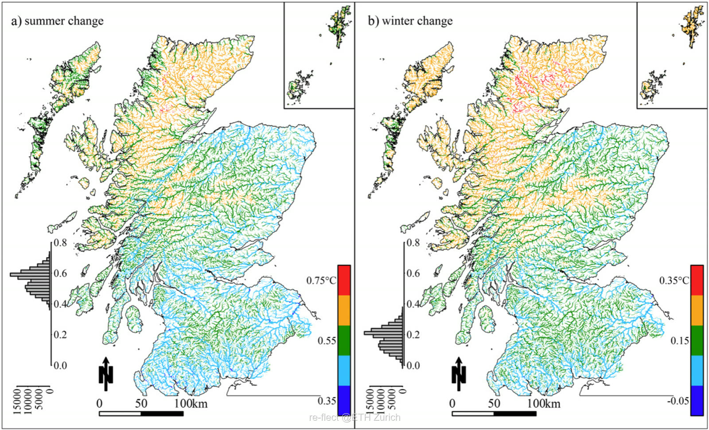
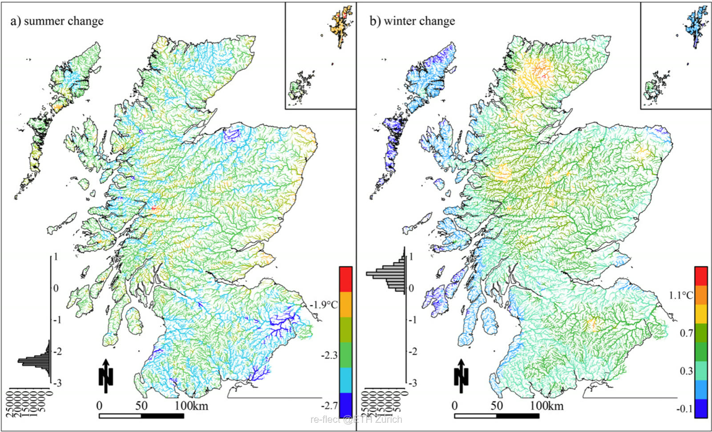
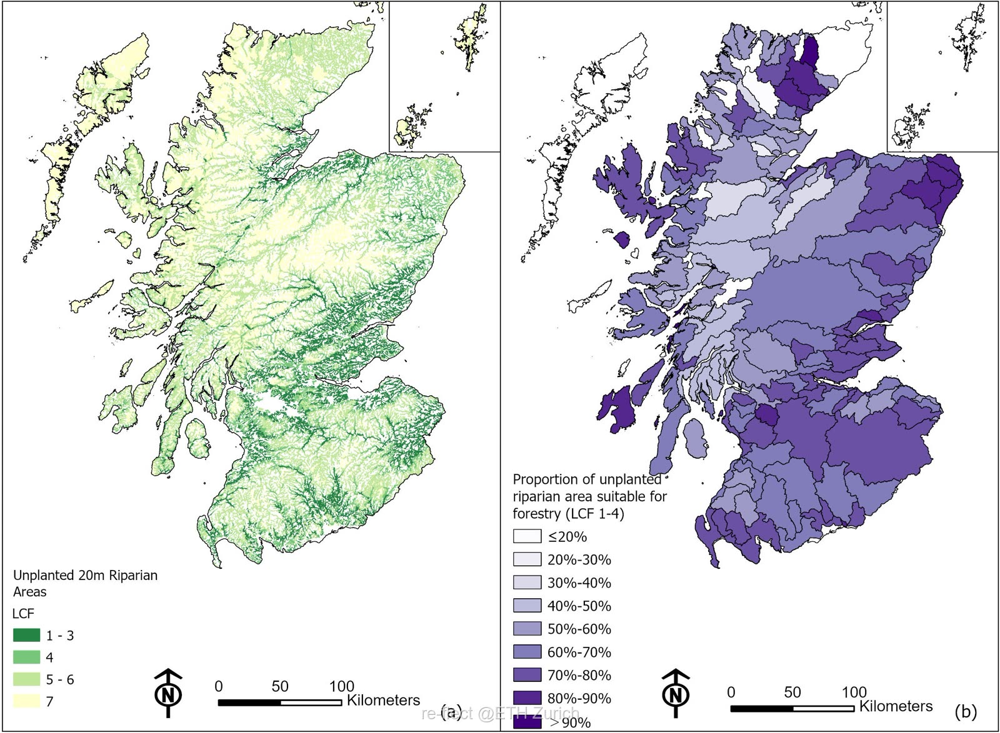

The geographical context
Scotland covers roughly 77,900 km² — about 32% of the UK — with river catchments that run from the wet, mountainous west to the drier eastern lowlands. Across this range, rising water temperatures increasingly threaten aquatic ecosystems, and the presence or absence of riparian woodland is a decisive factor.
Foundations: insights from the literature
The work builds on Jackson et al. (2018, 2021), which established three key mechanisms:
- Riparian woodland within a 25 m buffer extending 1,000 m upstream can reduce maximum daily river temperatures by approximately 2 °C.
- Trees provide seasonal thermal buffering — summer cooling by blocking radiation, and winter heat retention.
- Northern, western and Cairngorm regions are the most sensitive to climate change, because of naturally sparse tree cover.


Our contribution: mapping and geometric analysis
Using SEPA datasets, the National Land Capability for Forestry (James Hutton Institute) and the Riparian Woodland Scotland dataset, we analysed 20 m riparian buffers across the country. Our analysis reveals that 81% (3,018 km²) of Scotland's riparian zones currently lack woodland cover, indicating a massive theoretical potential for restoration.
- The reality check. Not all land is ready for planting. Environmental factors — including wind throw, soil wetness and topography — render 923 km² of this area unsuitable for tree crops (see map a below).
- The spatial mismatch. A critical insight from our work is a geographical disconnect: while previous studies (Jackson et al., 2018) identify rivers in the north, west and Cairngorms as most sensitive to climate warming, our analysis shows these regions largely coincide with land that is physically difficult to plant.
- High-priority targets. Despite these challenges, we identified 380 km² of non-wooded riparian land (≈17.7%) classified as offering "Good" to "Excellent" flexibility for tree growth — the top classes of the Land Capability for Forestry scale (LCF 1–3), which runs from Excellent (LCF 1) down to Unsuitable (LCF 7). The Eastern and Southern Lowlands, along with specific catchments on the western coast, emerge as the primary targets — where over 70% of unplanted riparian land is suitable for forestry.

To explore the data in depth, please visit our interactive map: Potential of Riparian Woodland Restoration in Scotland ↗